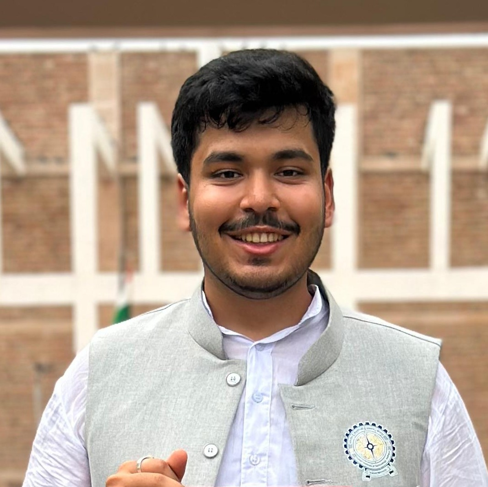

I am a Ph.D. student in the Department of Computer Science and Engineering at the Indian Institute of Technology (IIT) Jodhpur, where I work in the FADE research group and am supported by IndiaAI Fellowship.
My research focuses on algorithmic fairness and the development of trustworthy artificial intelligence. Specifically, I work on latent space steering and bias mitigation strategies for deep generative architectures and foundation modelsp.
